変数コンフィグレーションは、モデル中の変数とその値のペアを複数個セットにして名前をつけて管理できるようにしたものです。変数コンフィグレーションを利用すると、モデル内の変数をまとめて変更することが簡単にでき、モデルのバリエーション検討が容易になります。
コンフィグレーションの名前を入力し、コンフィグレーションに含めたい変数とその値を指定してOKをクリックします
変数コンフィグレーションは、本コマンドだけでなく、モデル構成ウィンドウのコンテキストメニューからも作成できます（後述）。
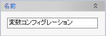
コンフィグレーションの名前を指定します。
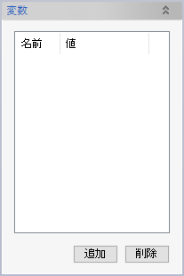
コンフィグレーションに含める変数の一覧です。「追加」ボタンをクリックするとモデル内の変数がすべて表示されます。
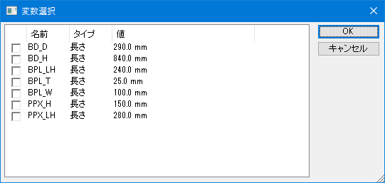
チェックボックスで変数を選択してOKをクリックすると、変数一覧が更新されます。
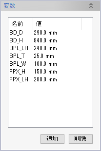
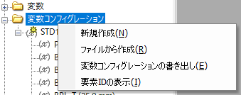
モデル構成ウィンドウ内の「変数コンフィグレーション」フォルダ上からコンテキストメニューを表示します。
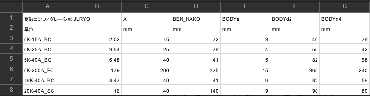
また、モデル構成ウィンドウ内で既存の変数コンフィグレーション要素を選択して表示するコンテキストメニューの項目「コピーの作成」で、同じ内容のコンフィグレーションを作成できます。
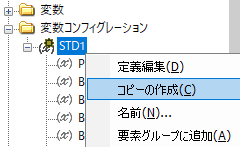
モデル構成ウィンドウ内で変数コンフィグレーション要素を選択して、コンテキストメニューを表示し「適用」をクリックすると、コンフィグレーションの値で変数が更新され、モデルも更新されます。
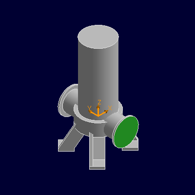 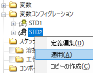 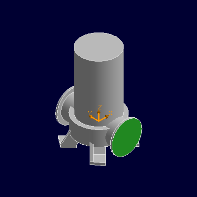
適用済みとなった（すべての変数の定義値が現在値と同じになった）変数コンフィグレーションは、アイコンが黄色で表示されます。
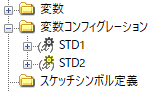
モデル構成ウィンドウでは変数コンフィグレーション配下にコンフィグレーション内の変数が表示されますが、その値はコンフィグレーションで定義した値ではなく、現在の変数の値を表しています。